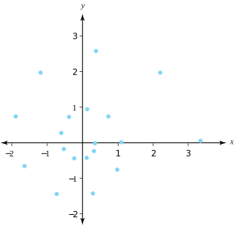

In Section 1.5 we indicated that it is possible to make sense out of expressions such as \(\sqrt{1+i}\) or \(i^{i}\) without appealing to a number system beyond the framework of complex numbers. We now show how this is done by taking note of some rudimentary properties of the complex exponential and logarithm, and then using our imagination.
We begin by generalizing Identity (5.2.6). Equations (5.2.3) and (5.2.5) show that \(\log(z)\) can be expressed as the set \(\log(z) =\{\mathrm{Log}(z) +i2n\pi : n \text{ is an integer } \}\text{.}\) We can easily show (left as an exercise) that, for \(z \ne 0\text{,}\)\(\exp[\log_{\alpha}(z)]=z\text{,}\) where \(\log_{\alpha}\) is any branch of the function \(\log\text{.}\) But this means that, for any \(\zeta \in \log(z)\text{,}\) the identity \(\exp \zeta =z\) holds true. Because \(\exp[\log(z)]\) denotes the set \(\{\exp \zeta : \zeta \in \log(z) \}\text{,}\) we see that \(\exp[\log(z)]=z\text{,}\) for \(z \ne 0\text{.}\)
Next, note that Identity (5.2.8) gives \(\log (z^n)=n\log(z)\text{,}\) where \(n\) is any natural number, so that \(\exp[\log(z^n)] = \exp[n\log(z)] = z^n\text{,}\) for \(z \ne 0\text{.}\) With these preliminaries out of the way, we can now come up with a definition of a complex number raised to a complex power.
Definition5.3.1.Complex exponent.
Let \(c\) be a complex number. We define \(z^{c}\) as
The right side of Equation (5.3.1) is a set. This definition makes sense because, if both \(z\) and \(c\) are real numbers with \(z>0\text{,}\) Equation (5.3.1) gives the familiar (real) definition for \(z^{c}\text{,}\) as the following example illustrates.
\begin{equation}
\frac{1}{2}\log(4) =\{\ln 2+in\pi :n \text{ is an integer } \}\text{.}\tag{5.3.2}
\end{equation}
Thus \(4^{\frac{1}{2}}\) is the set \(\{\exp(\ln 2+in\pi) :n \text{ is an integer } \}\text{.}\) The distinct values occur when \(n=0, \, 1\text{.}\) Plugging these values into Equation (5.3.2) gives \(\exp(\ln 2)=2\) and \(\exp(\ln 2+i\pi )=\exp(\ln 2) \exp(i\pi )=-2\text{.}\) In other words, \(4^{\frac{1}{2}} = \{-2,\,2\}\text{.}\)
The expression \(4^{\frac{1}{2}}\) is different from \(\sqrt{4}\text{,}\) as the former represents the set \(\{-2,\,2\}\) and the latter gives only one value, \(\sqrt{4}=2\text{.}\)
Because \(\log\) is multivalued, the function \(z^{c}\) will, in general, be multivalued. If we want to focus on a single value for \(z^{c}\text{,}\) we can do so via the function defined for \(z \ne 0\) by
which is called the principal branch of the multivalued function \(z^c\text{.}\) Note that the principal branch of \(z^c\) is obtained from Equation (5.3.1) by replacing \(\log(z)\) with the principal branch of the logarithm.
They exhibit a spiral pattern that is often present in complex powers.

Figure5.3.5.Some of the values of \(2^{\frac{1}{9}+\frac{i}{50}}\)
Some of the rules for exponents carry over from the real case. In the exercises we ask you to show that if \(c\) and \(d\) are complex numbers and \(z \ne 0\text{,}\) then
\begin{align*}
(i^2)^{i} \amp = \exp \left[ i\log(-1) \right] =e^{-(1+2n) \pi}, \text{ where } n \text{ is an integer, and }\\
(i)^{2i} \amp = \exp(2i\log i) =e^{-(1+4n) \pi}, \text{ where } n \text{ is an integer. }
\end{align*}
Since these sets of solutions are not equal, Identity (5.3.8) does not always hold.
We can compute the derivative of the principal branch of \(z^{c}\text{,}\) which is the function \(f(z) =\exp[c\mathrm{Log}(z)]\text{.}\) By the chain rule,
If we restrict \(z^{c}\) to the principal branch, \(z^{c}=\exp\big[c\mathrm{Log}(z)\big]\text{,}\) then Equation (5.3.9) can be written in the familiar form that you learned in calculus. That is, for \(z \ne 0\) and \(z\) not a negative real number,
If we specify a branch of the logarithm, then \(b^z\) will be single-valued and we can use the rules of differentiation to show that the resulting branch of \(b^z\) is an analytic function. The derivative of \(b^z\) is then given by the familiar rule
Note that \(0\cdot \log (z) = \{0 \cdot \zeta : \zeta \in \log (z)\}\text{.}\) This set amounts to the single element zero. Thus, for \(z \ne 0, \, z^0 = \exp (0 \cdot \log z) = \exp(0) = 1\text{.}\)
4.
For \(z=re^{i\theta} \ne 0\text{,}\) show that the principal branch of
where \(r>0\) and \(-\pi \lt \theta \le \pi\text{.}\)
5.
Let \(z_n=(1+i)^n\) for \(n=1,\,2,\ldots\) Show that the sequence \(\{z_n\}\) is a solution to the difference equation \(z_n=2z_{n-1}-2z_{n-2}\) for \(n \ge 3\text{.}\)
\(2z_{n-1}-2z_{n-2}=2(1+i)^{n-1}-2(1+i)^{n-2}=2(1+i)^{n-2}[(1+i)-1]\text{.}\) This last expression simplifies to \(2i(1+i)^{n-2}\text{.}\) Now, \(z_n=(1+i)^n\text{.}\) Since \mathrm{Log} is a one-to-one function, the problem is solved by showing \(\mathrm{Log}[( 1+i)^n] = \mathrm{Log}[2i(1+i)^{n-2}]\text{.}\) Use properties of the logarithm to do this.
No. \(1^{a+ib}=e^{a2\pi n}\cos (b2\pi n) + ie^{a2\pi n}\sin (b2\pi n)\text{,}\) where \(n\) is an integer.
8.
Construct an example that shows that the principal value of \((z_1z_2)^{\frac{1}{3}}\) need not equal the product of the principal values of \(z_1^{\frac{1}{3}}\) and \(z_2^{\frac{1}{3}}\text{.}\)
9.
If \(c\) is a complex number, the expression \(i^c\) may be multivalued. Suppose all the values of \(|i^c|\) are identical. What are these values, and what can be said about the number \(c\text{?}\) Justify your assertions.